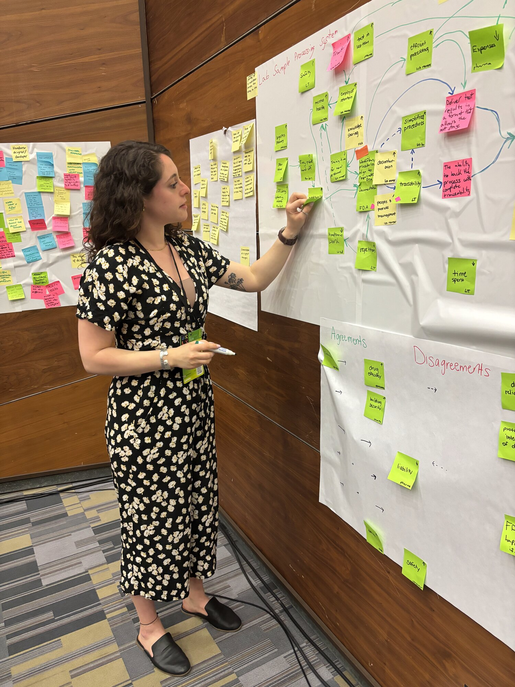

About
I pair on-the-floor field research with workflow architecture, constraint-driven design, and tight collaboration with engineering.

Mid-synthesis — mapping research findings during a cross-program workshop.
How I work
I've led UX design inside high-volume operational environments for the last five years — fulfillment centers, robotic workstations, and the kind of cross-program rollouts where hardware deadlines, software constraints, and human attention are all fighting for the same square foot.
The work I'm best at sits at the seam between service design and product design. Mapping the workflow before designing the screen. Designing the failure states with the same rigor as the happy path. Holding the line on operator outcomes when feature scope tries to swallow them.
When the constraints are tight, the design gets sharper. That's the part I love.
What I do
Resolving complex, multi-program operations into structured workflows where every step, exception, and handoff is explicit.
Designing the experience around the screen as much as the screen itself — across hardware, ops, and downstream teams.
Contextual interviews, on-floor shadowing, and behavioral pattern analysis under live operating conditions.
Treating the failure path as a core deliverable — with measurable recovery, escalation, and instrumentation.
UI, hardware indicators, and multi-modal feedback systems for collaborative robots and automated workstations.
Translating operator outcomes into shared artifacts that product, software, hardware, and ops teams can build against.
My process
Start on the floor. Interviews with the people doing the work, shadowing during live shifts, and behavioral observation across sites. The output is a verified picture of how the system actually runs — not how it's drawn in the spec.
Turn research into end-to-end task flows, touchpoint diagrams, and journey maps where exception paths sit alongside the happy path, not below it. This is the artifact that aligns product, engineering, and ops on a shared problem.
For every task and every exception, write a measurable operator outcome and connect it to the program KPI it moves. That becomes the bar a design has to clear — and the success signal we instrument before launch.
Fixed hardware, legacy architecture, aggressive timelines — these are the brief. I work them into the design rather than around them, with explicit rules for severity, hierarchy, and recovery.
Validate the new design against the same baselines the program was launched on — quantitative metrics tied to each task-flow step, paired with qualitative interviews back at the same sites.
Currently
Senior UX Designer at Amazon Robotics, working across automated workstations. Open to senior & staff-level UX roles where systems thinking and service design are the job.
Get in touch
Currently exploring senior & staff-level UX roles in systems thinking and service design.